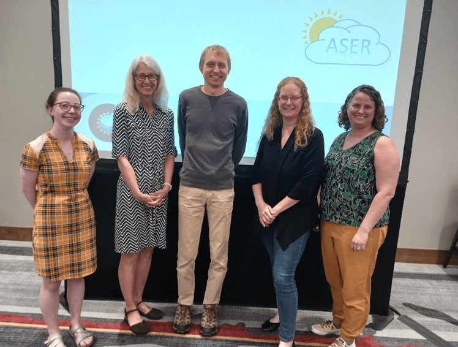
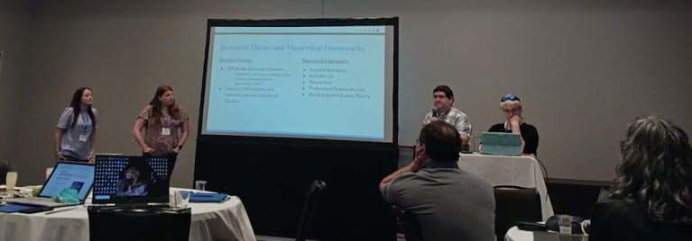
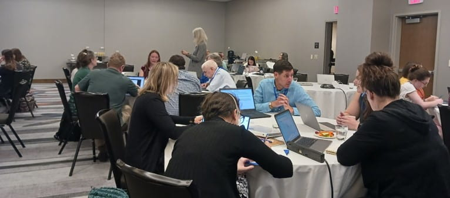
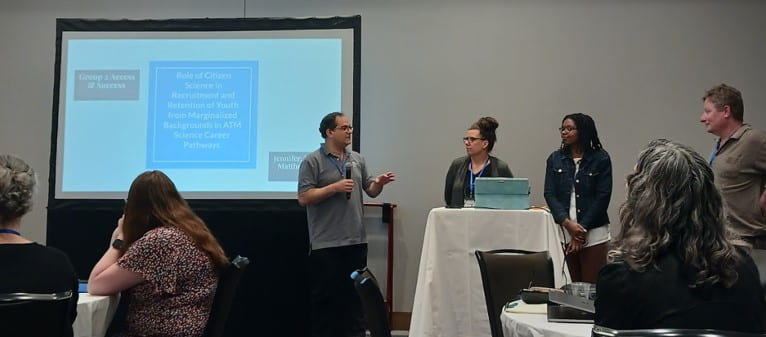
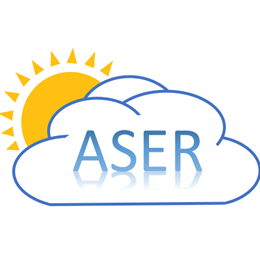

Research Projects › ASER › 2023 Advancing ASER Workshop
The “Developing Expertise and Building Collaborations to Advance Atmospheric Science Education Research” project began with a workshop in May 2023.

The workshop brought together 21 atmospheric scientists and six DBER experts who trained and mentored the scientists in conducting education research. Participants formed research groups and established research projects that are ongoing. Topics explored included why students choose to pursue meteorology at the college level, their experiences once enrolled in an atmospheric science program, how students understand and reflect on their own learning, and alternative grading methods.



At the 2024 Annual Meeting of the American Meteorological Society (AMS), five groups presented research started at the workshop in the Conference on Education. The workshop resulted in six total presentations at AMS 2024 and one at the Earth Educators’ Rendezvous, followed by three more at AMS 2025. That meeting also featured a special Presidential Conference session on atmospheric science education research, titled “Teaching Atmospheric Science: Celebrating Atmospheric Science Education Research Progress and Sustaining Momentum into the Future.”
Knowledge gained from these studies of teaching and learning in atmospheric science can also be applied to other STEM fields. The professional development workshop produced a larger, stronger community united by a common goal: improving atmospheric science education so that future weather and climate scientists are trained in the best way possible — better equipped to inform society about and address weather and climate impacts now and in the future.
Download the full Project Outcomes Report (PDF)
